Hamlet
Shakespeare's Hamlet directed by Gocha Kapanadze, performed in English at Shanghai Grand Theatre, in collaboration with Georgia National Theatre.
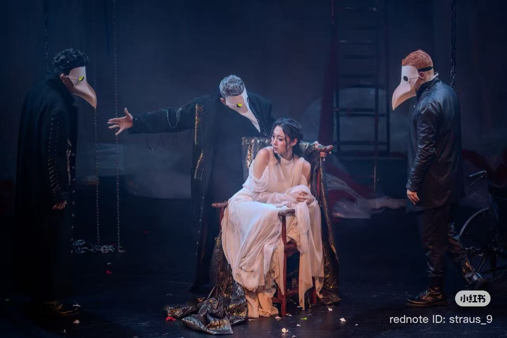
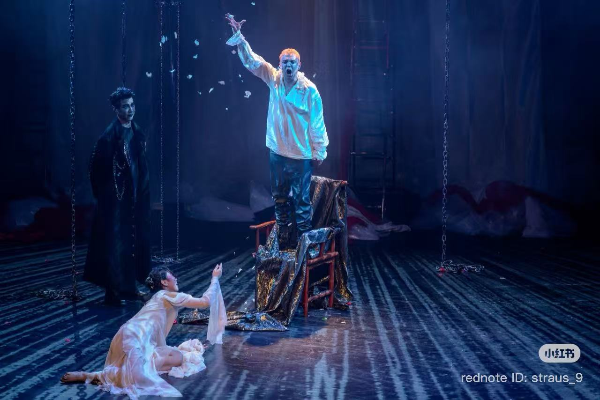
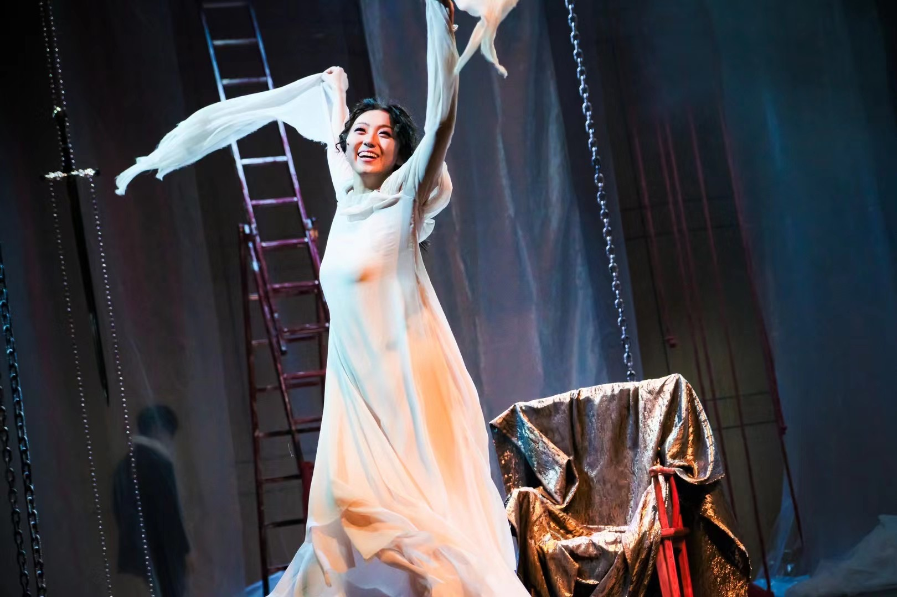
02 / ACTING
A space for acting, solo performance, devised work and performance collaborations.
Selected performance materials are gathered here.
Shakespeare's Hamlet directed by Gocha Kapanadze, performed in English at Shanghai Grand Theatre, in collaboration with Georgia National Theatre.



Directed by Bowen Zhai, made with Project Dragonfly 2025 and shown at the Wuzhen Theatre Festival.

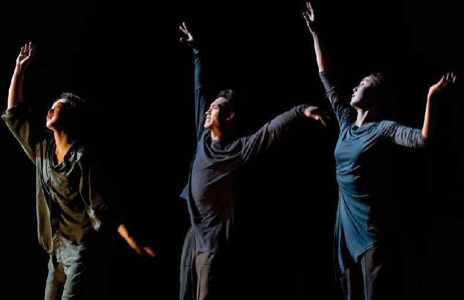

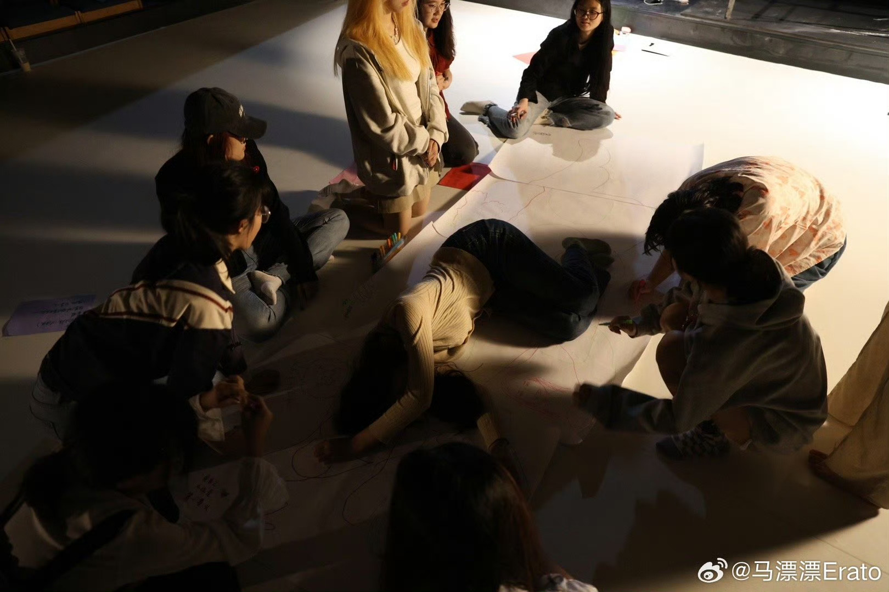
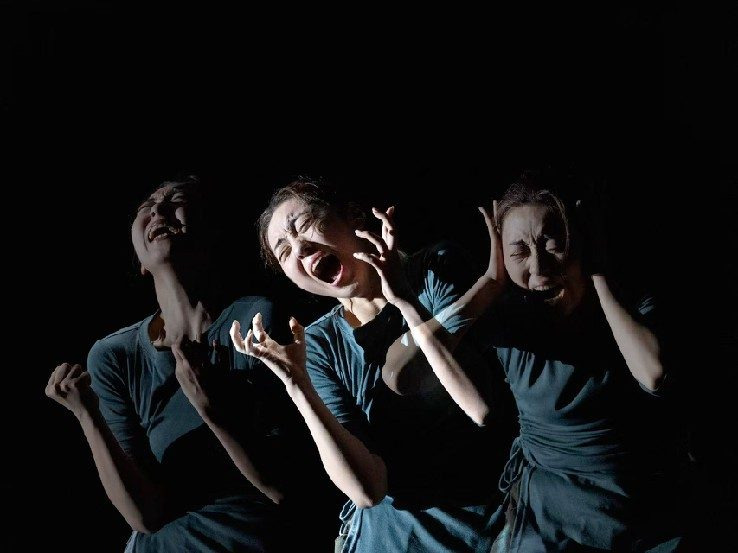
Other performances
Theatre, reality television and further stage work.
A collision of Chinese opera convention and Artaud's Theatre of Cruelty. Xiwei also designed the actor-training workshop for the production.
Film
Screen work as actress and actor-trainer.
Actress / Actor-trainer
Actress
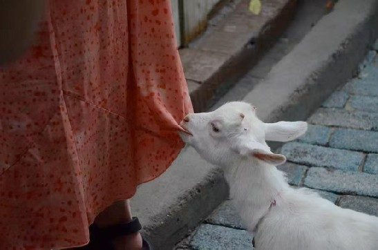
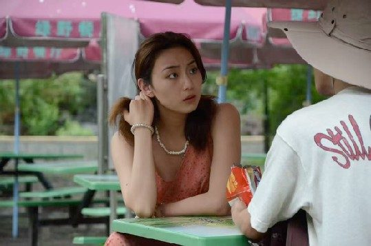
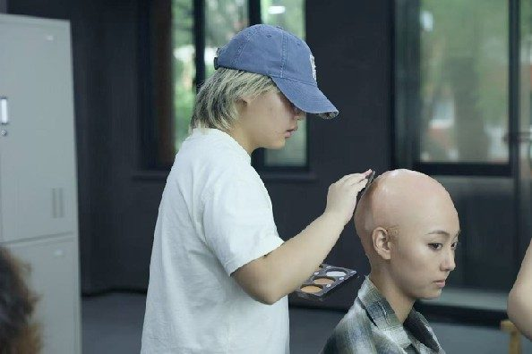
《燃·后 After Crush》
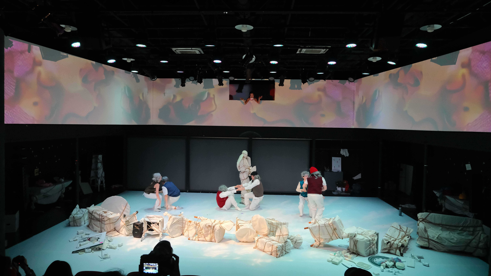
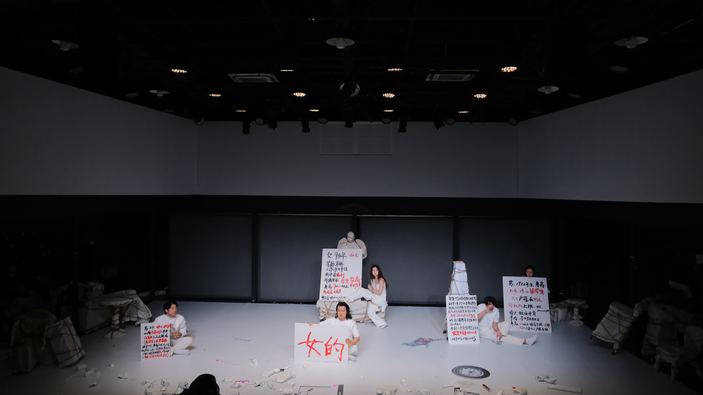
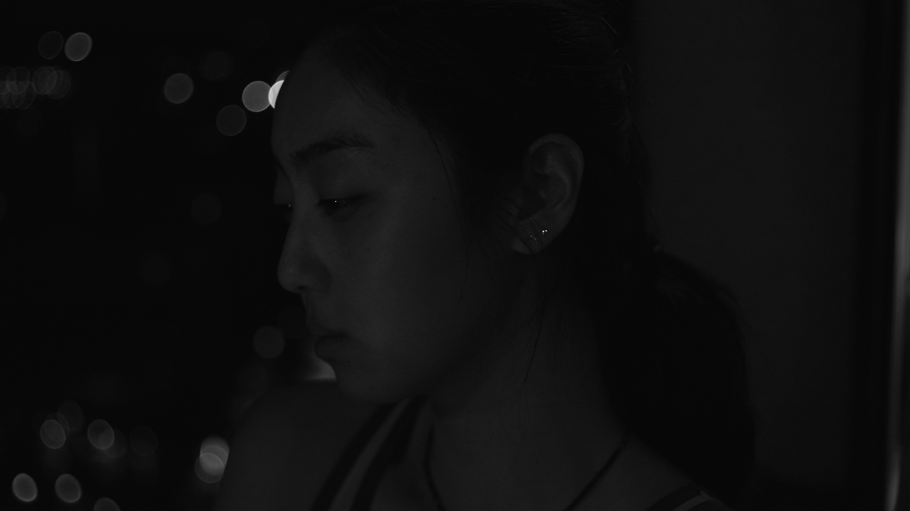
Model project
Held here while the artist confirms the project details and images.